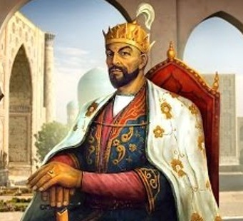

"There is no future without a historical memory"
"There is no future without a historical memory"

"If you have doubts in our power, take a look at the buildings we have built"
| Ancestors | Field of Study | Lifetime |
|---|---|---|
| Al-Beruniy | Physics, Mathematics, Astronomy, Natural Sciences | 973-1048 |
| Al-Fergani | Astronomy | 798-861 |
| Al-Khorazmiy | mathematics, geography, arithmetic, trigonometry | 780-850 |
| Ibn Sino (Avicenna) | medicine, chemistry, astronomy, philosophy, logic | 980-1037 |
| Alisher Navoiy | poetry, philosophy | 1441-1501 |
| Mukhammad Bobur | poetry, writer, statesman | 1483-1530 |
| Mirzo Ulugbek | politics, astronomy, mathematics | 1394-1449 |